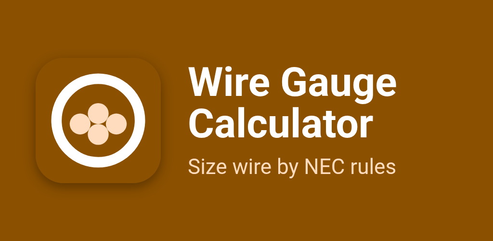
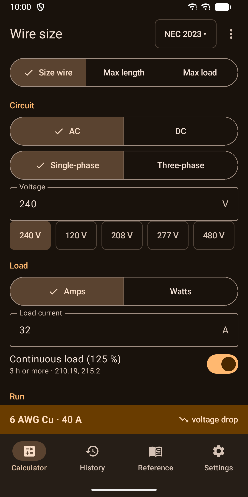
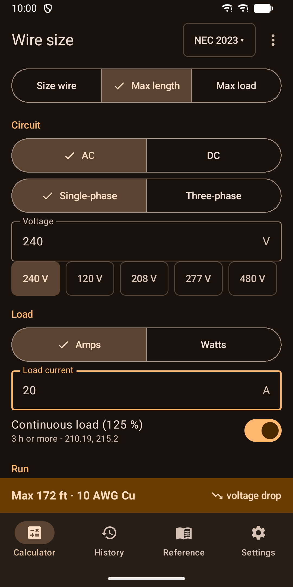
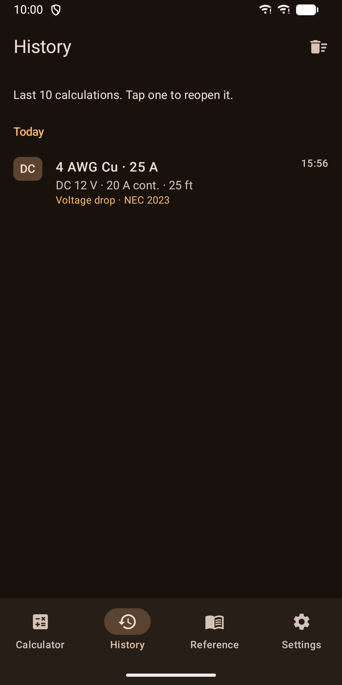
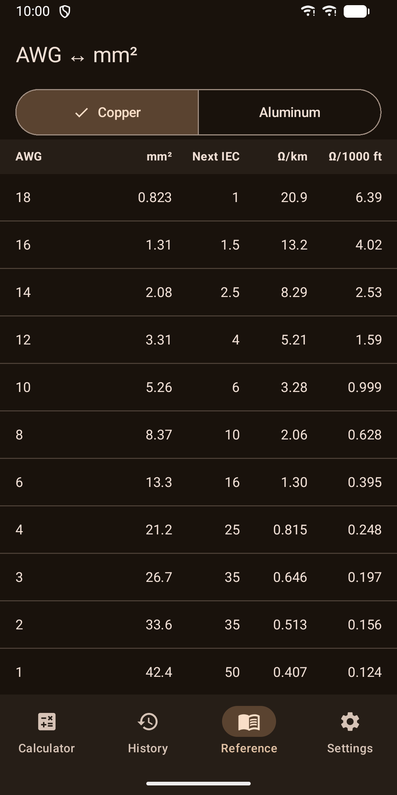
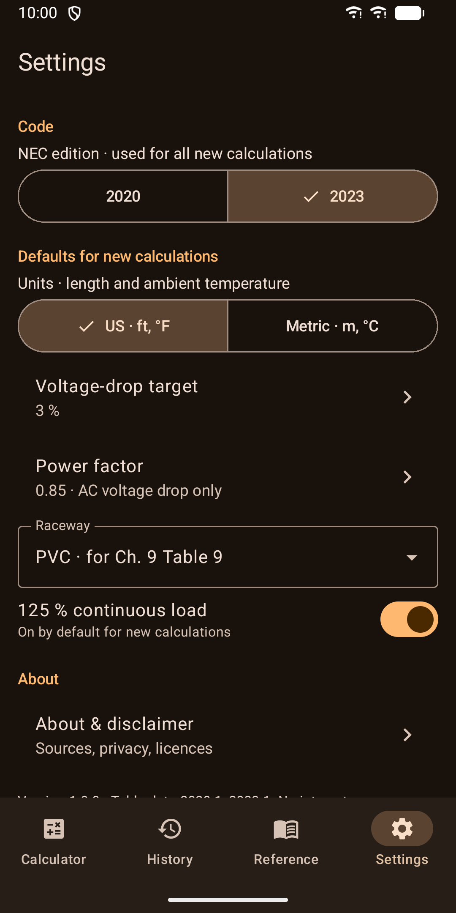
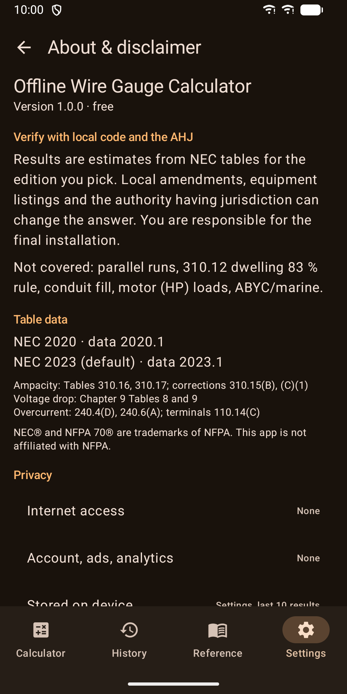

Wire Gauge Calculator: NEC
Size wire by NEC ampacity, voltage drop and breaker rules







About
Wire Gauge Calculator picks the conductor size for a circuit from NEC ampacity, voltage drop and breaker rules. Every result tells you which rule set the size and which NEC table and edition it comes from. SIZE WIRE, OR WORK BACKWARDS - Size wire: enter the load, the run length and the conditions. You get the wire size and the breaker. - Max length: choose a wire and see how far you can run it within your voltage-drop target. - Max load: choose a wire and a length and see the largest load it can carry. BUILT ON THE NEC - NEC 2020 and NEC 2023. 2023 is the default and the app remembers your choice. - Ampacity from Table 310.16 (raceway or cable) and Table 310.17 (free air). - Derating for ambient temperature and the number of current-carrying conductors. - 125 percent continuous load, 240.4(D) small-conductor limits and 110.14(C) terminal temperature. - Next standard breaker size from 240.6(A). Enter your own size or check an existing breaker against the wire. - Voltage drop from Chapter 9 Table 9 for AC, with power factor and a PVC, aluminum or steel raceway, and from Table 8 for DC. FOR ELECTRICIANS, DIYERS AND 12 V / 24 V BUILDS - AC single-phase or three-phase, or DC with 12 V and 24 V presets. - Load in amps, or in watts and volts. - Copper or aluminum, 14 AWG to 1000 kcmil. 18 and 16 AWG are offered for DC. - THHN, XHHW-2, NM-B and other common insulation types, with a manual temperature column override. - Feet or meters, Fahrenheit or Celsius. CLEAR ANSWERS - Each result names what set the size: ampacity, voltage drop, breaker or terminals. - Each result cites the NEC table and edition used. - Share a result as plain text. - History keeps your last 10 calculations. Tap one to reopen it. - A home-screen widget shows your last 3 results. - An AWG to mm2 reference table with resistance, computed from public formulas. PRIVATE BY DESIGN - It works without a signal. The app has no internet permission and requests no permissions at all. - No account, no analytics, no tracking. - Your settings and last 10 results stay on your device. ACCESSIBLE - Light and dark theme follow your system setting. - Screen reader labels on controls and results. - Large touch targets, with layouts for phones and tablets. NOT COVERED Parallel runs, the 310.12 dwelling 83 percent rule, conduit and box fill, motor (HP) loads and ABYC or marine tables. Results are estimates. Always verify with local code and the authority having jurisdiction (AHJ). NEC and NFPA 70 are trademarks of NFPA. This app is not affiliated with NFPA.